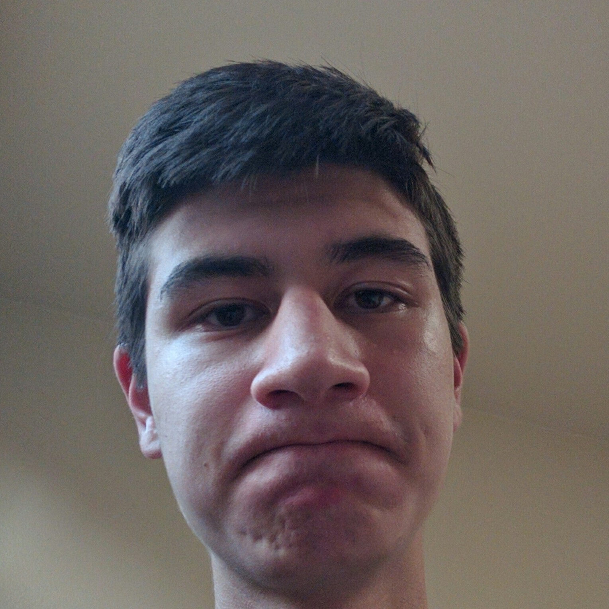

Math Circle Officers

Jane Ahn
President
A senior, Jane likes probability and combinatorics. She made the 2016 Math Olympiad Summer Program and has been in math club since her freshman year.

Matthew Shi
Co-Vice President
A senior, Matthew enjoys math.

Shannon Yang
Co-Vice President
A senior, Shannon has been in math club since her freshman year.
Andrew Lin
Secretary
A sophomore, Andrew has been in math club since his freshman year and has not participated with Gunn at HMMT.

Jonathan Rogers
Treasurer
A sophomore, Jonathan has been in math club since his freshman year and has participated with Gunn at HMMT.